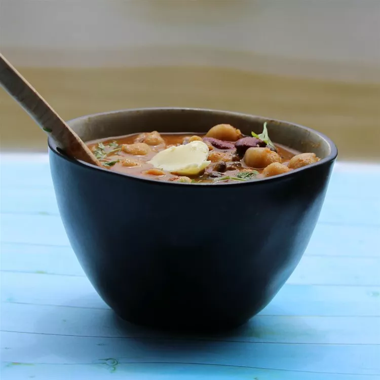

back to home
Makhani Daal Recipe

Makhani Daal Dish(Buttery Lentils)
Ingredients
- 1 cup black lentils (kaali daal)
- ¼ cup split chickpeas (channa daal)
- ¼ cup red kidney beans (rajma)
- 2 teaspoons vegetable oil
- 1 onion, finely chopped
- 1 (2 inch) piece ginger, minced
- 2 cloves garlic, minced
- 1 teaspoon cumin seeds
- 2 tomatoes, finely chopped
- 2 teaspoons ground coriander
- 1 teaspoon garam masala
- ½ teaspoon red chile powder
- ½ teaspoon ground turmeric
- salt to taste
- 2 teaspoons butter
- 2 teaspoons yogurt
- 3 sprigs cilantro leaves
Steps
- Place black lentils, chickpeas, and red kidney beans in a large container and cover with several inches of cool water; let soak, 6 hours to overnight.
- Pour lentil mixture and soaking liquid into a pressure cooker. Bring to high pressure according to manufacturer's instructions and cook until soft, about 20 minutes. Remove from heat and release pressure through natural release method according to manufacturer's instructions.
- Heat oil in a large skillet over medium heat. Add onion, ginger, garlic, and cumin seeds; cook and stir until golden brown, about 3 minutes. Add tomatoes; cook and stir until softened, about 2 minutes. Stir in ground coriander, garam masala, red chile powder, turmeric, and salt.
- Fold onion mixture into cooked lentil mixture. Add butter, yogurt, and cilantro leaves; stir to incorporate.